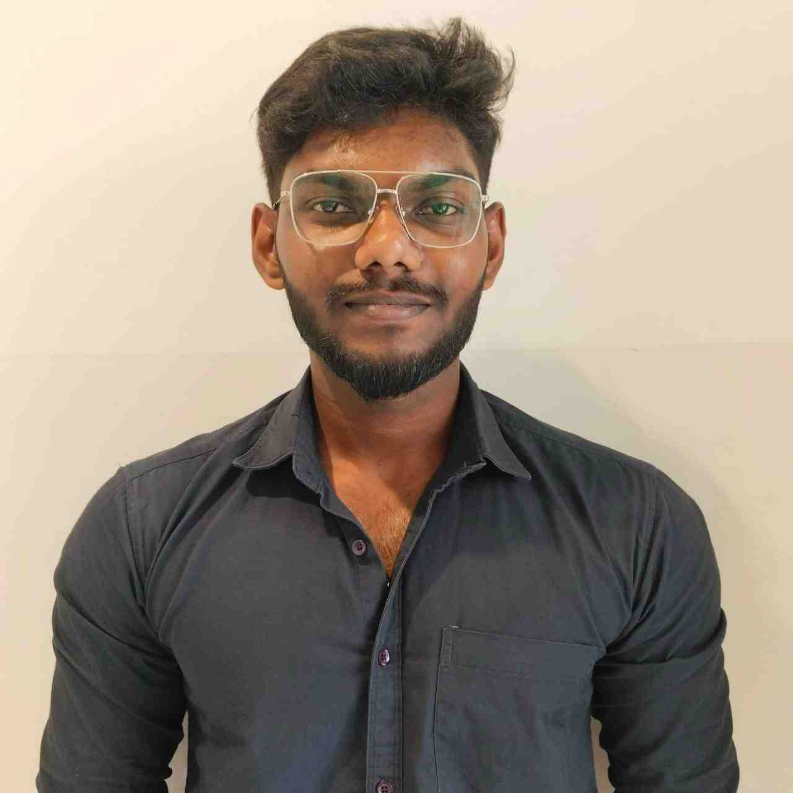

Data Analytics
Data cleaning, exploratory analysis, visualization and predictive modelling with Python, Pandas, NumPy, Matplotlib, Seaborn and XGBoost.
Graduate Engineer Trainee at HCLTech with a year of hands-on SAP BASIS and Security work, building Python, SQL and machine learning projects to move into data analytics.

I started my career keeping enterprise SAP landscapes healthy and secure. Alongside that, I taught myself data analysis and machine learning through projects, from cleaning raw data to forecasting sales with XGBoost. I'm looking to apply both sides to real-world problems.
Data cleaning, exploratory analysis, visualization and predictive modelling with Python, Pandas, NumPy, Matplotlib, Seaborn and XGBoost.
User administration, role and authorization support, system monitoring and health checks, and Transport Management System (STMS) operations.
Analyzed e-commerce sales, customer and order data with Python and Pandas. Cleaned the data, explored and visualized it to understand sales and customer patterns, then built an XGBoost model to forecast sales from historical and time-based features.
Built a machine learning project in Python to predict VR sickness. Handled preprocessing, exploratory analysis, visualization and feature selection, then applied machine learning algorithms to find patterns in the data and predict outcomes.
Saveetha School of Engineering, Chennai · CGPA: 8.2 / 10
S.B.O.A. Higher Secondary School · 82.12
S.B.O.A. Higher Secondary School · 358 / 500